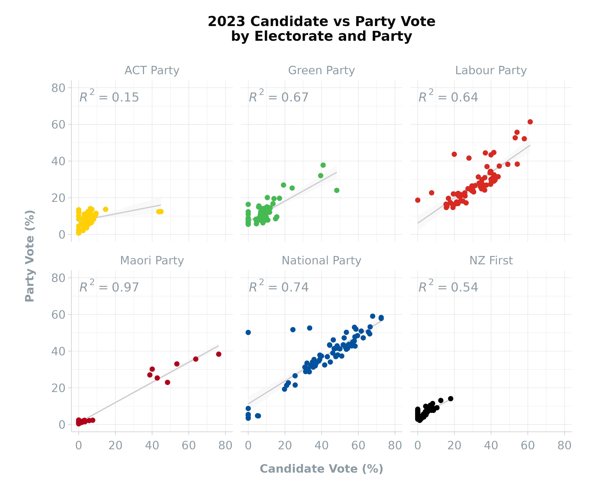

Party and Candidate Votes
Source:vignettes/articles/party-and-candidate-votes.rmd
party-and-candidate-votes.rmd
This article offers a detailed analysis of the party_votes
and candidate_votes
datasets in the scgElectionsNZ
package, shedding light on the voting dynamics in New Zealand’s
elections.
Overview
The party_votes
and candidate_votes
datasets provide comprehensive insights into party preferences and
candidate popularity across electorates. These datasets are pivotal for
understanding how New Zealand’s Mixed-Member Proportional (MMP) system
translates individual and party preferences into electoral outcomes.
Loading and Exploring the Data
Begin by loading the party_votes
and candidate_votes
datasets to understand their structure and the information they
contain:
Party Votes
party_df <- scgUtils::get_data("party_votes")
head(party_df, 10)
#> # A tibble: 10 × 5
#> Election Ballot Electorate Party Votes
#> <dbl> <chr> <chr> <chr> <int>
#> 1 2023 Party Auckland Central ACT Party 3301
#> 2 2023 Party Auckland Central Animal Justice Party 50
#> 3 2023 Party Auckland Central Aotearoa Legalise Cannabis Party 142
#> 4 2023 Party Auckland Central DemocracyNZ 32
#> 5 2023 Party Auckland Central Freedoms NZ 48
#> 6 2023 Party Auckland Central Green Party 8503
#> 7 2023 Party Auckland Central Informal 85
#> 8 2023 Party Auckland Central Labour Party 8028
#> 9 2023 Party Auckland Central Leighton Baker Party 3
#> 10 2023 Party Auckland Central Maori Party 563Candidate Votes
candidate_df <- scgUtils::get_data("candidate_votes")
head(candidate_df, 10)
#> # A tibble: 10 × 6
#> Election Ballot Electorate Party Votes Percentage
#> <dbl> <chr> <chr> <chr> <dbl> <dbl>
#> 1 2023 Candidate Auckland Central ACT Party 1235 3.59
#> 2 2023 Candidate Auckland Central Green Party 16624 48.3
#> 3 2023 Candidate Auckland Central Labour Party 2608 7.57
#> 4 2023 Candidate Auckland Central National Party 12728 37.0
#> 5 2023 Candidate Auckland Central NZ First 0 0
#> 6 2023 Candidate Auckland Central Maori Party 0 0
#> 7 2023 Candidate Auckland Central Other 1252 3.63
#> 8 2023 Candidate Banks Peninsula ACT Party 2073 4.24
#> 9 2023 Candidate Banks Peninsula Green Party 8325 17.0
#> 10 2023 Candidate Banks Peninsula Labour Party 17464 35.7As you can see, the candidate_votes
dataset places all unsuccessful parties into “Other” and does not
include Informal votes.
Merging Party and Candidate Vote Data
Ensure Party names are consistent across both datasets using the update_names()
function and then combine both datasets for a unified analysis:
# Make party_df in line with candidate_df by making unsuccessful parties "Other"
# and filtering out Informal data
party_df <- update_names(party_df)
party_df <- party_df %>%
filter(Party != "Informal") %>%
group_by(Election, Electorate, Ballot, Party) %>%
summarise(Votes = sum(Votes), .groups = 'drop') %>%
ungroup() %>%
group_by(Election, Electorate, Ballot) %>%
mutate(Percentage = Votes / sum(Votes) * 100) %>%
ungroup() %>%
arrange(-Election, Electorate, Ballot, Party)
df <- rbind(party_df, candidate_df)
head(df, 10)
#> # A tibble: 10 × 6
#> Election Electorate Ballot Party Votes Percentage
#> <dbl> <chr> <chr> <chr> <dbl> <dbl>
#> 1 2023 Auckland Central Party ACT Party 3301 9.33
#> 2 2023 Auckland Central Party Green Party 8503 24.0
#> 3 2023 Auckland Central Party Labour Party 8028 22.7
#> 4 2023 Auckland Central Party Maori Party 563 1.59
#> 5 2023 Auckland Central Party NZ First 1351 3.82
#> 6 2023 Auckland Central Party National Party 11751 33.2
#> 7 2023 Auckland Central Party Other 1881 5.32
#> 8 2023 Banks Peninsula Party ACT Party 3919 7.91
#> 9 2023 Banks Peninsula Party Green Party 9763 19.7
#> 10 2023 Banks Peninsula Party Labour Party 13200 26.6Reshaping the Data
Reshape the data to help us understand how party and candidate preferences align or diverge:
df <- df %>%
filter(Election == 2023) %>%
mutate(Ballot = ifelse(Ballot == "Party", "Party Vote", "Candidate Vote")) %>%
select(Election, Ballot, Electorate, Party, Percentage) %>%
tidyr::pivot_wider(names_from = Ballot, values_from = Percentage)
df[is.na(df)] <- 0
head(df, 10)
#> # A tibble: 10 × 5
#> Election Electorate Party `Party Vote` `Candidate Vote`
#> <dbl> <chr> <chr> <dbl> <dbl>
#> 1 2023 Auckland Central ACT Party 9.33 3.59
#> 2 2023 Auckland Central Green Party 24.0 48.3
#> 3 2023 Auckland Central Labour Party 22.7 7.57
#> 4 2023 Auckland Central Maori Party 1.59 0
#> 5 2023 Auckland Central NZ First 3.82 0
#> 6 2023 Auckland Central National Party 33.2 37.0
#> 7 2023 Auckland Central Other 5.32 3.63
#> 8 2023 Banks Peninsula ACT Party 7.91 4.24
#> 9 2023 Banks Peninsula Green Party 19.7 17.0
#> 10 2023 Banks Peninsula Labour Party 26.6 35.7Visualising Party and Candidate Votes
The following visualisation compares party and candidate votes. The scatter plot and linear regression help in understanding the correlation between these two types of votes, which can indicate the degree of split voting by electorate:
df %>%
filter(Party != "Other") %>%
ggplot(aes(x = `Candidate Vote`, y = `Party Vote`, colour = Party)) +
geom_smooth(method = "lm", se = TRUE, formula = y ~ x,
colour = scgUtils::colour_pal("French Grey"),
linewidth = 0.5, fill = "#F4F4F5", alpha = 0.5) +
geom_point(na.rm = TRUE) +
ggpmisc::stat_poly_eq(colour = scgUtils::colour_pal("Regent Grey")) +
facet_wrap(. ~ Party) +
scale_colour_manual(values = scgUtils::colour_pal("polNZ")) +
coord_equal(ylim = c(0, 80), xlim = c(0, 80)) +
labs(title = "2023 Candidate vs Party Vote\nby Electorate and Party",
y = "Party Vote (%)\n",
x = "Candidate Vote (%)") +
scgUtils::theme_scg() +
theme(legend.position = "none")